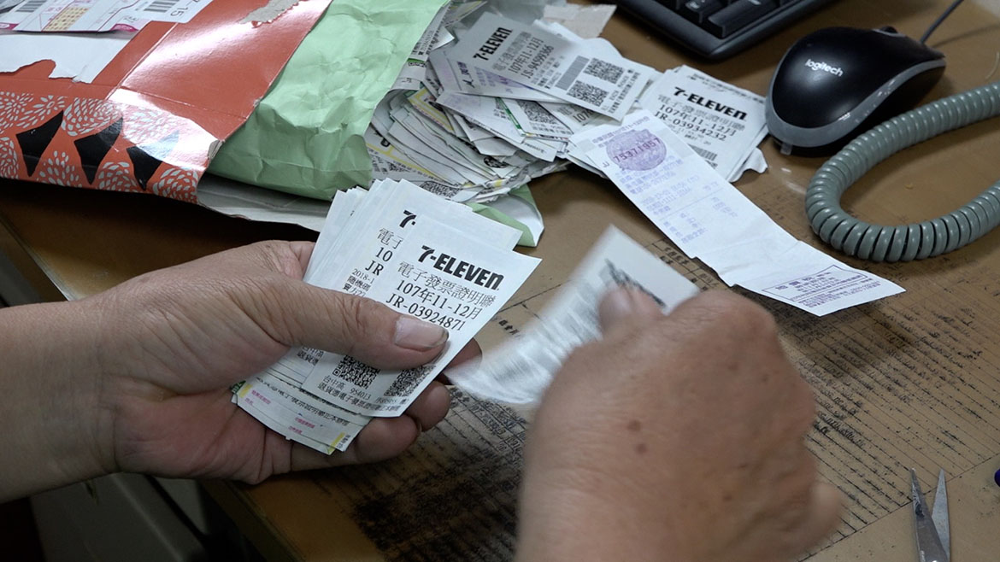

【感心的人們】
跟蹤月餘 她慨捐一輛休旅車
幾年前，中華小腦萎縮症協會理事長林秀成開車在路上接送病友，突然，一輛車子橫到他的車前，活生生把他攔了下來。
他火氣上來，「真是莫名其妙，我又沒跟他擦撞，也沒引起交通事故，這部車子是怎麼搞的？」結果車上下來一位小姐，她說：「先生，我送你一部車好不好？」林秀成覺得無厘頭極了，對方繼續說：「我跟蹤你一個月了，發現你是真的在服務病友，所以決定送你一部車子。」
當時，林秀成的妻子還在世，他每天載妻子去看診時，也會順道接其他的病友。但因為車子太舊太小，後車箱放二部輪椅後，蓋子便無法蓋上。因此，他開車時無法從後視鏡觀察後方來車，只能靠二邊後照鏡，行進間的確不太方便。
儘管如此，他對有人主動上門送車仍半信半疑。他給了對方協會的聯絡窗口，沒想到對方在半年後真的通知他們去領一部後車廂寬敞的休旅車，且還幫忙買了一整年的全額保險。林秀成說：「真的是超有愛心的。」
他笑了，「這位小姐常常在觀察，有時我把車子停在協會幾天沒動，她還會打電話給我，跟我說『你們要好好使用那部車啊』。」

有些愛心人士會主動收集發票寄給企鵝家族。
然而，愛心從來不是用金錢衡量。他說：「還有一位賴小姐，長期幫我們收集發票，再宅配幫忙寄來，也是很有心。」協會工作同仁統計過，以中獎機率除以發票數，平均一張發票可以換得0.3毛錢，「說真的，統一發票中獎機率不高，但她的心意勝過一切。」
林秀成又說：「台灣是個有愛的社會，我們並不渴求每個人都出錢出力，只希望一般人能多給小腦萎縮症及其他病症的病友多點關懷，不是同情，而是同理，那會讓病友在面對病魔時，更有奮鬥的勇氣。」